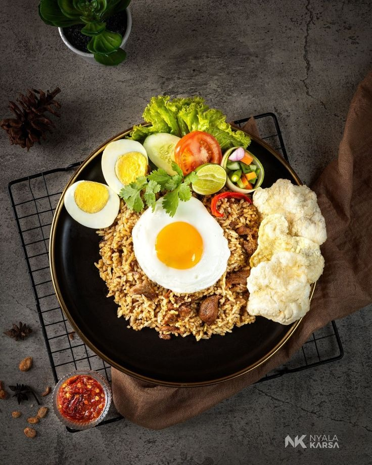
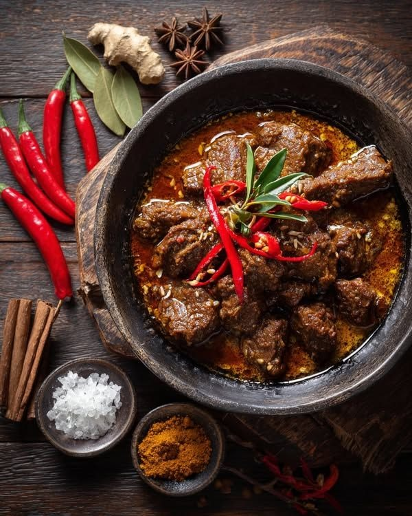
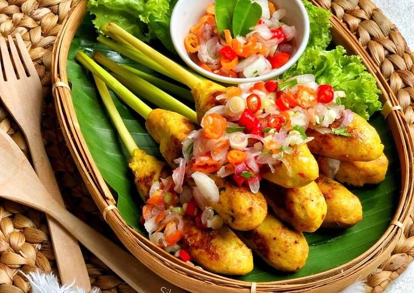
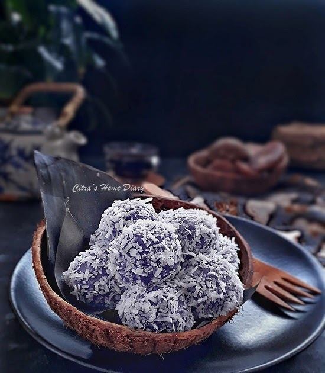
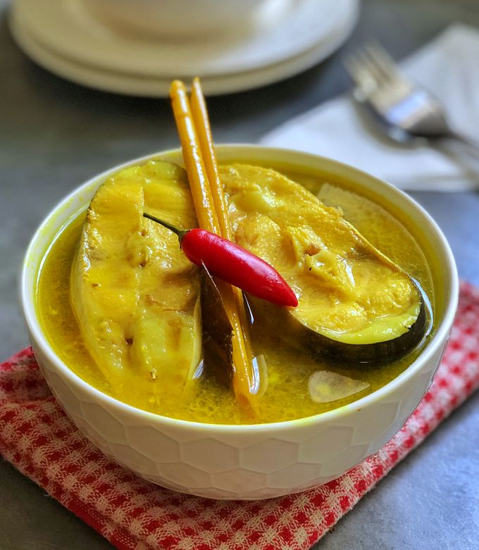

Temukan sejarah, cerita, dan fakta menarik di balik kuliner nusantara dari Sabang sampai Merauke.

Dipercaya berasal dari pengaruh imigran Tionghoa yang membawa tradisi untuk tidak membuang sisa makanan, terutama nasi. Nasi goreng menjadi solusi praktis dan ekonomis. Ia kemudian beradaptasi dengan bumbu lokal seperti kecap manis, menjadikannya unik di Indonesia.

Rendang adalah masakan adat dan budaya yang telah ada sejak lama. Proses memasak yang memakan waktu lama (lebih dari 8 jam) bertujuan sebagai metode pengawetan agar makanan tahan lama untuk perjalanan jauh, seperti pada tradisi merantau masyarakat Minangkabau.

Sate secara umum diperkirakan berasal dari Jawa. Namun, Sate Lilit adalah varian khas Bali yang dagingnya dicincang dan dililitkan pada batang serai atau bambu, bukan ditusuk seperti sate pada umumnya. Ini merepresentasikan kebersamaan dan kesatuan, karena bahannya dicampur.

Asal-usul klepon berakar kuat dalam tradisi kuliner Jawa, di mana penggunaan beras ketan, gula aren/gula jawa, dan kelapa menunjukkan bahwa kue ini adalah penganan asli yang sudah ada sejak lama. Sejarawan makanan menduga bahwa penganan yang menggunakan bahan inti ini, seperti klepon dan kerabat dekatnya, kue putu, sudah ada di Jawa sejak era Kerajaan Majapahit (1293–1527). Berarti, klepon mungkin telah berusia lebih dari 700 tahun!

Sejarah Ikan Kuah Kuning tidak lepas dari makanan pokok utama masyarakat Papua, yaitu Papeda. Karena Papeda memiliki rasa yang tawar dan tekstur yang lengket, masyarakat adat membutuhkan lauk berkuah kental dengan cita rasa yang kuat, asam, dan segar sebagai penyeimbang. tercipta dari ketersediaan bahan-bahan lokal di pesisir, yaitu ikan segar yang melimpah, kunyit sebagai pewarna alami, dan sumber rasa asam (belimbing wuluh/jeruk nipis). Resep ini adalah ekspresi langsung dari kekayaan bahari & hasil bumi di Indonesia Timur.